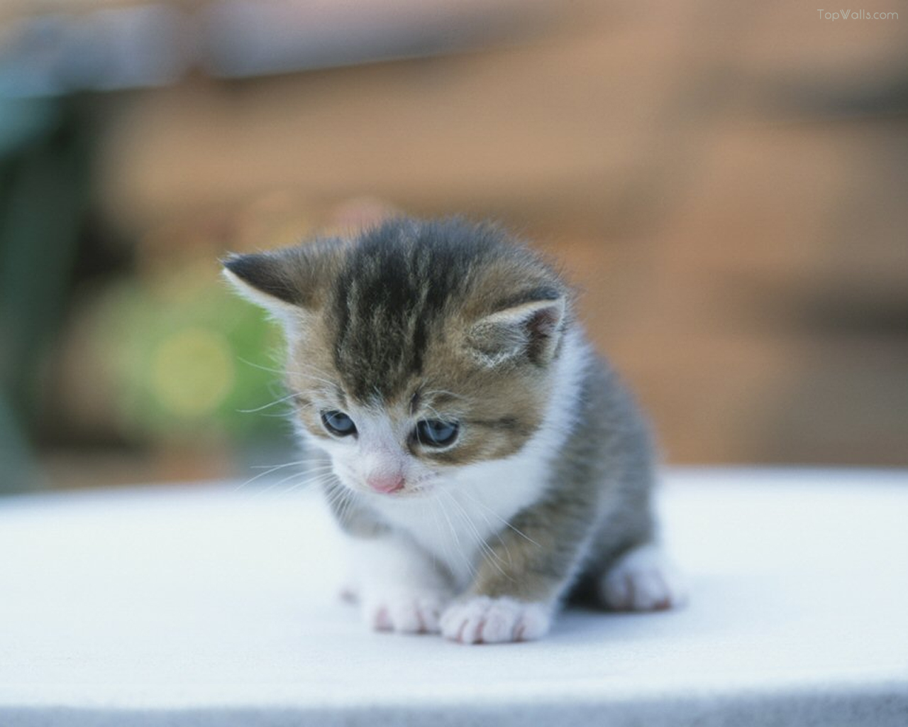

Single Picture

Picture with text
Kucing persia adalah ras kucing domestik berbulu panjang dengan karakter wajah bulat dan moncong pendek. Namanya mengacu pada Persia, nama lama Iran, di mana kucing serupa ditemukan.
Kucing miaw miaw